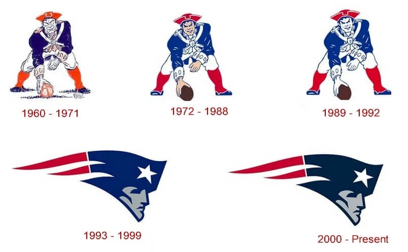

Who Are the New England Patriots?
Based in Foxborough, Massachusetts, the New England Patriots are a professional football team. They participate in the American Football Conference (AFC) East Division of the National Football League (NFL). The team is one of the most well-known franchises in the league and is widely acknowledged for its performance over the last few decades. The Patriots have a large following that extends well beyond New England, and they are well-known for their distinctive blue, silver, and red outfits. Gillette Stadium, a cutting-edge venue that has become an icon for local sports fans, is where they host their home games.
The team was founded in 1959 and, following the AFL-NFL merger, joined the NFL in 1970. They have undoubtedly established themselves since the turn of the century, even though they weren't always the dominant team we know today. Their domination under quarterback Tom Brady and coach Bill Belichick is largely responsible for their notoriety. They are regarded as one of the most successful teams in NFL history because of their culture they built, which is known today as "do your job".
Their accomplishment wasn't without controversy, though. Incidents like "Spygate" and "Deflategate" brought the squad criticism, but it didn't stop them for long. Regardless of whether you consider the Patriots to be heroes or villains, their history is an intriguing tale of tenacity, creativity, and power.
